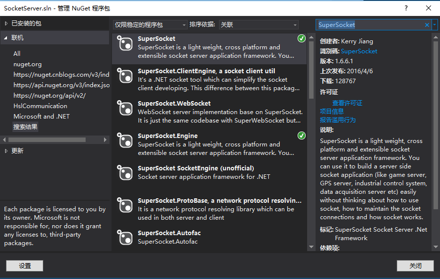
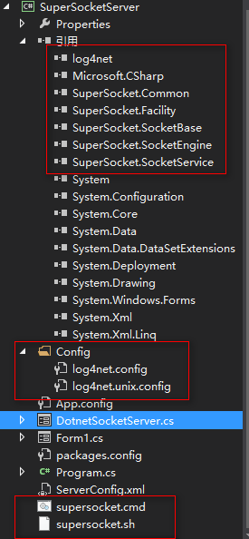
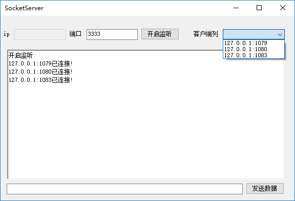
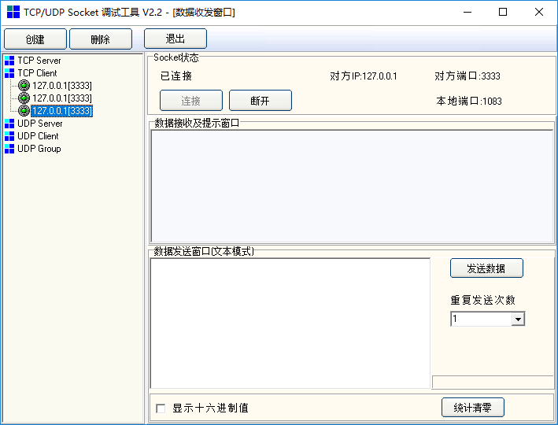
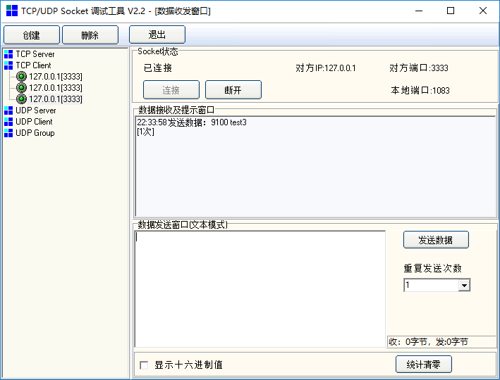
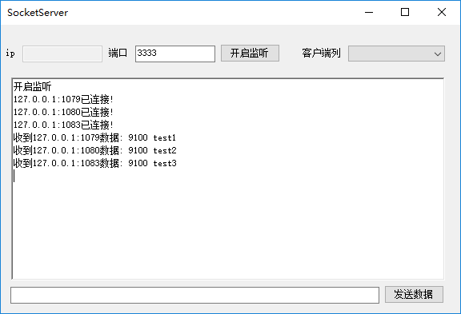
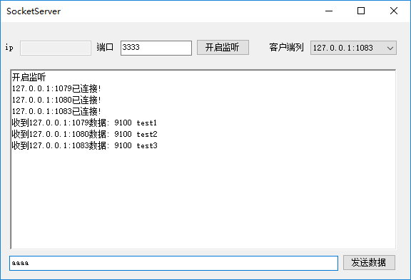
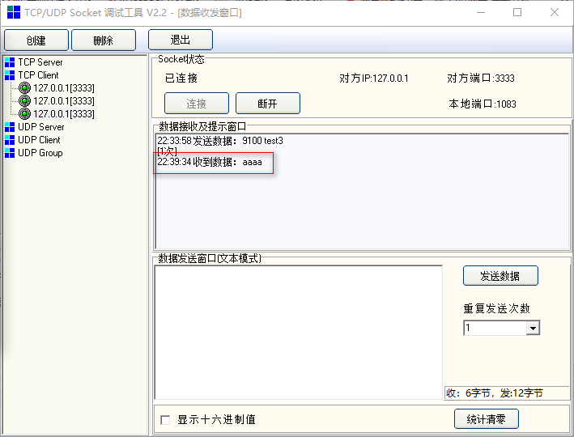
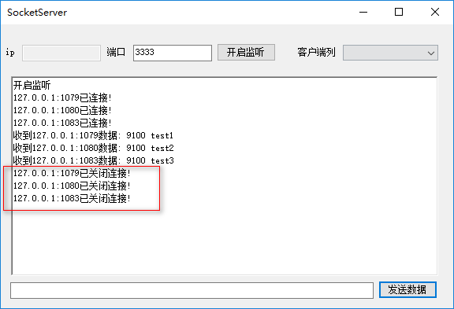

原文连接:https://www.cnblogs.com/pandefu/p/10774780.html
上一篇文章我们使用原生的socket分别实现了服务器和客户端,
本篇文章使用SuperSocket来开发实现服务器,
之前也介绍了SuperSocket是一个轻量级, 跨平台而且可扩展的 .Net/Mono Socket 服务器程序框架。你无须了解如何使用 Socket, 如何维护 Socket 连接和 Socket 如何工作，但是你却可以使用 SuperSocket 很容易的开发出一款 Socket 服务器端软件，例如游戏服务器，GPS 服务器, 工业控制服务和数据采集服务器等等。
接下来开始我们的开发,首先我们需要安装SuperSocket相关程序包,我们新建一个项目开发SuperSocket服务器
然后打开NuGet程序包管理器,搜索SuperSocket ,下载安装SuperSocket和SuperSocket.Engine

下载安装完毕后,我们的项目中会自动引用了SuperSocke和log4net 相关程序集和配置文件

进入正题上代码,我们这里只用SuperSocket做服务器端,客户端使用SocketTool做测试
SocketTool
链接：https://pan.baidu.com/s/1ykEofUIZKE2yhe3mMyRbJw
提取码：m2nk
SuperSocket实现服务器:


1 using System;
2 using System.Collections.Generic;
3 using System.ComponentModel;
4 using System.Data;
5 using System.Drawing;
6 using System.Linq;
7 using System.Text;
8 using System.Threading.Tasks;
9 using System.Windows.Forms;
10 using System.Net.Sockets;
11 using System.Net;
12 using System.Threading;
13 using SuperSocket;
14 using SuperSocket.SocketBase;
15 using SuperSocket.SocketBase.Protocol;
16
17 namespace SuperSocket
18 {
19 public partial class SuperSocketServer : Form
20 {
21 public SuperSocketServer()
22 {
23 InitializeComponent();
24 }
25
26 private void SuperSocketServer_Load(object sender, EventArgs e)
27 {
28 //txt_ip.Text = "127.0.0.1";
29 txt_port.Text = "3333";
30 }
31
32 //AppServer 代表了监听客户端连接，承载TCP连接的服务器实例。理想情况下，我们可以通过AppServer实例获取任何你想要的客户端连接，服务器级别的操作和逻辑应该定义在此类之中。
33 AppServer appServer;
34 //缓冲字节数组
35 byte[] buffer = new byte[2048];
36
37 string ipAddress_Connect;
38 string ipAddress_Close;
39 string ipAddress_Receive;
40
41 //存储session和对应ip端口号的泛型集合
42 Dictionary<string, AppSession> sessionList = new Dictionary<string, AppSession>();
43
44 enum OperateType
45 {
46
47 Add = 1, //添加
48 Remove = 2 //移除
49 }
50
51 /// <summary>
52 /// 开启服务
53 /// </summary>
54 /// <param name="sender"></param>
55 /// <param name="e"></param>
56 private void btn_StartListen_Click(object sender, EventArgs e)
57 {
58 appServer = new AppServer();
59 if (!appServer.Setup(int.Parse(txt_port.Text)))
60 {
61 SetMessage("Failed to Setup");
62 return;
63 }
64 if (!appServer.Start())
65 {
66 SetMessage("Failed to Start");
67 return;
68 }
69 else
70 {
71 SetMessage("开启监听");
72 }
73 //SuperSocket自定义了三个事件 ,连接事件,接收事件,关闭事件
74 appServer.NewSessionConnected += appServer_NewSessionConnected;
75 appServer.NewRequestReceived += appServer_NewRequestReceived;
76 appServer.SessionClosed += appServer_SessionClosed;
77 }
78
79 /// <summary>
80 /// 接收连接
81 /// </summary>
82 /// <param name="session"></param>
83 void appServer_NewSessionConnected(AppSession session)
84 {
85 //有新连接的时候,添加记录 session.LocalEndPoint属性获取当前session的ip和端口号
86 //AppSession 代表一个和客户端的逻辑连接，基于连接的操作应该定于在该类之中。你可以用该类的实例发送数据到客户端，接收客户端发送的数据或者关闭连接。
87
88 //获取远程客户端的ip端口号
89 ipAddress_Connect = session.RemoteEndPoint.ToString();
90 ComboboxHandle(ipAddress_Connect, OperateType.Add);
91 sessionList.Add(ipAddress_Connect, session);
92 SetMessage(ipAddress_Connect + "已连接!");
93 }
94
95 /// <summary>
96 /// 接收数据
97 /// </summary>
98 /// <param name="session"></param>
99 /// <param name="requestInfo"></param>
100 void appServer_NewRequestReceived(AppSession session, StringRequestInfo requestInfo)
101 {
102 //requestInfo.Key 是请求的命令行用空格分隔开的第一部分
103 //requestInfo.Parameters 是用空格分隔开的其余部分
104 //requestInfo.Body 是出了请求头之外的所有内容
105 ipAddress_Receive = session.RemoteEndPoint.ToString();
106 SetMessage("收到" + ipAddress_Receive + "数据: "+requestInfo.Key +" "+ requestInfo.Body);
107 }
108
109 /// <summary>
110 /// 关闭连接
111 /// </summary>
112 /// <param name="session"></param>
113 /// <param name="value"></param>
114 void appServer_SessionClosed(AppSession session, SocketBase.CloseReason value)
115 {
116 ipAddress_Close = session.RemoteEndPoint.ToString();
117 ComboboxHandle(ipAddress_Close, OperateType.Remove);
118 sessionList.Remove(ipAddress_Close);
119 SetMessage(ipAddress_Close + "已关闭连接!");
120 }
121 /// <summary>
122 /// 发送数据
123 /// </summary>
124 /// <param name="sender"></param>
125 /// <param name="e"></param>
126 private void btn_send_Click(object sender, EventArgs e)
127 {
128 //从客户端列获取想要发送数据的客户端的ip和端口号,然后从sessionList中获取对应session然后调用send()发送数据
129 if (cmb_socketlist.Items.Count != 0)
130 {
131 if (cmb_socketlist.SelectedItem == null)
132 {
133 MessageBox.Show("请选择一个客户端发送数据!");
134 return;
135 }
136 else
137 {
138 sessionList[cmb_socketlist.SelectedItem.ToString()].Send(txt_send.Text);
139 }
140 }
141 else
142 {
143 SetMessage("当前没有正在连接的客户端!");
144 }
145 txt_send.Clear();
146 }
147
148 /// <summary>
149 /// 添加信息
150 /// </summary>
151 /// <param name="str"></param>
152 private void SetMessage(string str)
153 {
154 richTextBox1.Invoke(new Action(() => { richTextBox1.AppendText(str + "\r\n"); }));
155 }
156
157 /// <summary>
158 /// combobox操作
159 /// </summary>
160 /// <param name="ipAddress"></param>
161 /// <param name="operateType">add 添加项/remove 移除项</param>
162 private void ComboboxHandle(string ipAddress, OperateType operateType)
163 {
164 if (operateType == OperateType.Add)
165 {
166 cmb_socketlist.Invoke(new Action(() => { cmb_socketlist.Items.Add(ipAddress); }));
167 }
168 if (operateType == OperateType.Remove)
169 {
170 cmb_socketlist.Invoke(new Action(() => { cmb_socketlist.Items.Remove(ipAddress); }));
171 }
172 }
173
174 }
175 }先挂上官方说明文档 http://docs.supersocket.net/v1-6/zh-CN
这里说明几点:
(1)这里appServer_NewRequestReceived(AppSession session, StringRequestInfo requestInfo)方法中的StringRequestInfo
是包含请求信息的,
requestInfo.Key 是请求的命令行用空格分隔开的第一部分
requestInfo.Parameters 是用空格分隔开的其余部分,用空格分割开的字符串数组
requestInfo.Body 是出了请求头之外的所有内容,是一个字符串
(2)这里requestInfo是客户端发送过来 严格按照 请求头 请求参数 请求参数 请求参数 \r\n 的格式发送, 空格隔开的第一部分是请求头,后边用空格分割后组成的数据就是请求参数
而且必须是以回车换行结尾 SuperSocket才能正确接收;
(3)这里请求头和请求参数用什么分割是可以自定义;我们可以自定义AppServer类,继承APPServer类,然后使用下面的代码扩展命令行协议
比如用":"分割请求头和请求参数,用","分隔请求参数.
1 public class YourServer : AppServer<YourSession>
2 {
3 public YourServer()
4 : base(new CommandLineReceiveFilterFactory(Encoding.Default, new BasicRequestInfoParser(":", ",")))
5 {
6
7 }
8 }接下来我们开始测试,还是默认使用3333端口,开启监听,我们依旧是使用SocketTool工具创建三个客户端,一起访问服务器
服务器:

客户端

接下来三个客户端分别以"9100"为请求头,test为请求体给服务器发送数据,记住客户端发送数据一定以回车换行为结尾
客户端:

服务器:

接下里测试服务器给客户端,这里以服务器给端口为1083的客户端发送数据"aaaa"
从客户端列选择端口号为1083的客户端,在textbox输入aaaa 发送数据
服务器

客户端

接下里客户端关闭连接
服务器

到此,SuperSocket实现的服务器测试完美收官,其实SuperSocket的功能远不止于此,我也只是刚开始使用
待后续研究官方文档后什么新的发现在更新,告辞!
感谢客观阅读,拜谢(抱拳~)
两篇文章的源码
本来想上传GitHub的,毕竟这样显得专业一点,奈何初来乍到的,实在操作不了(留下了不懂英文的泪水),还是放云盘吧!
链接：https://pan.baidu.com/s/1zjCvkP2Ne9U3KR8vyBKhFw
提取码：gee7